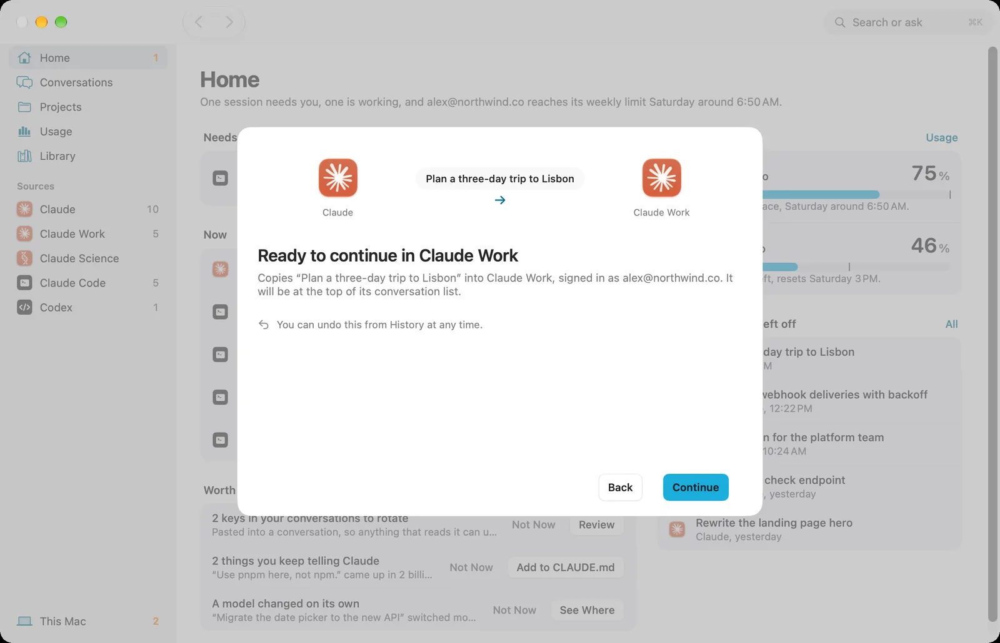
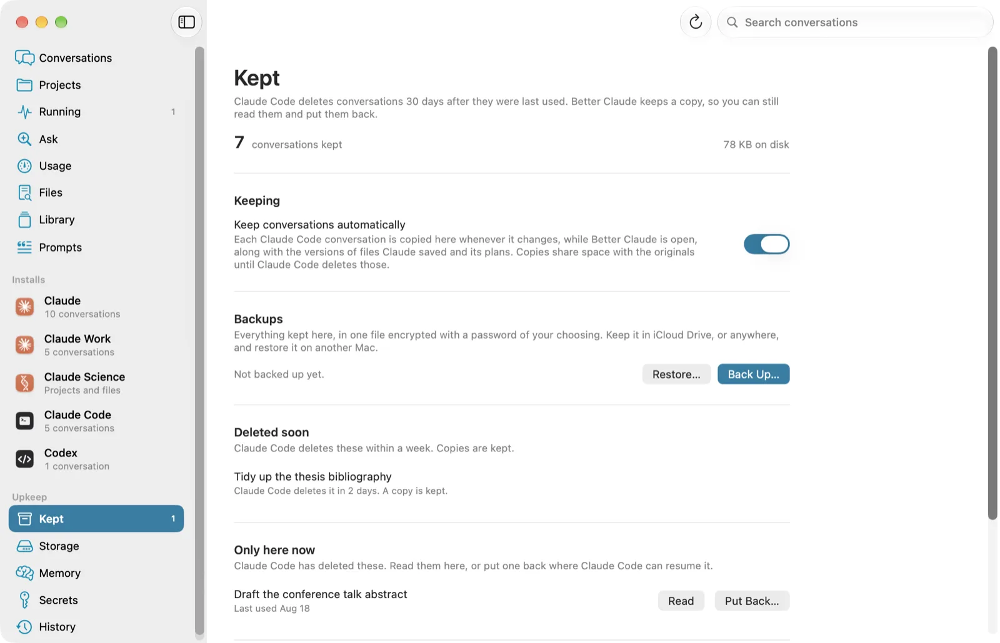
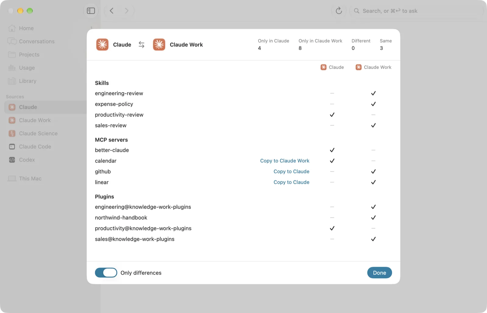
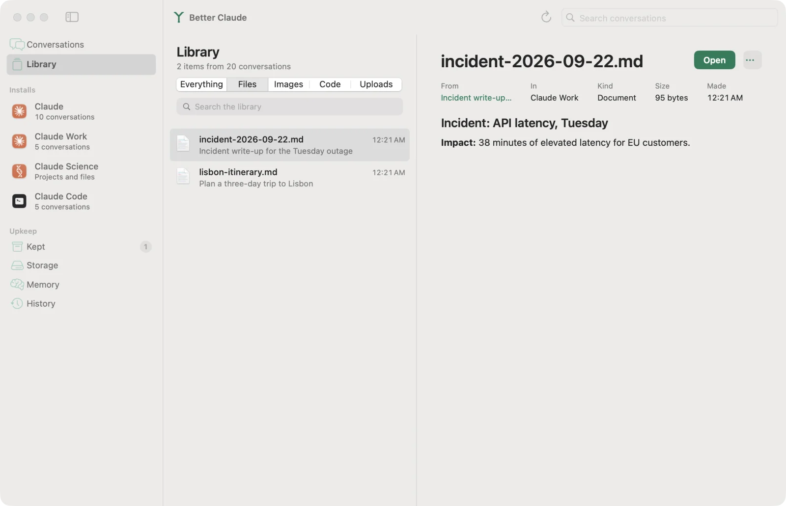
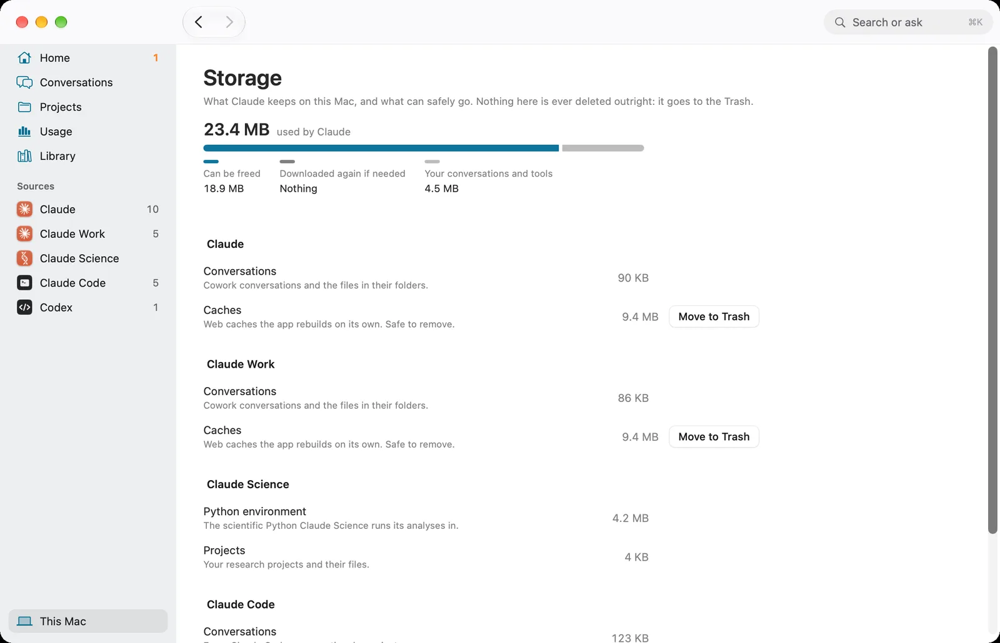
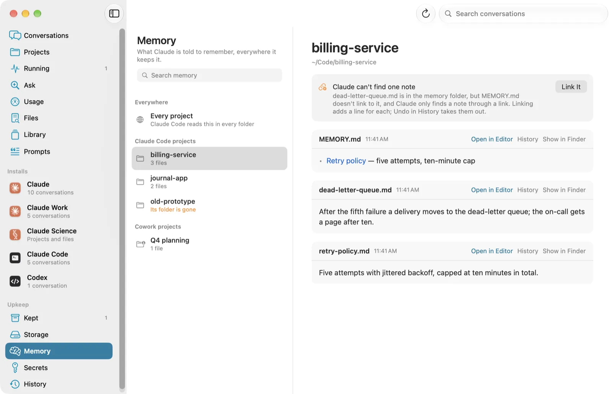

Better Claude puts every Claude on your Mac in one window: Claude, its copies,
Claude Science and Claude Code. Read any conversation, continue it somewhere else,
and keep it before Claude Code deletes it.
Everything Claude keeps on your Mac, finally in one window
Every conversation, one timeline
Cowork sessions from Claude and every copy of it, Claude Code sessions, and the
Code tab, newest first. Filter by install or project, search titles as you type,
or search inside every message. Read any conversation without opening Claude,
and watch it update while Claude is still writing.
Continue anywhere, and take it back
Carry a conversation into another Claude or into a Claude Code project with the
chat intact, down to its images and documents. You see where it's going and what
will happen before anything is written. Fork a Claude Code conversation from any
message. Every copy and fork can be undone from History.

Kept, before Claude Code deletes it
Claude Code deletes a conversation 30 days after you last used it. Better Claude
keeps a copy as each one changes, as clones that take no space until the original
is gone. Read it later, continue it elsewhere, or put it back where
claude --resume finds it.

What each Claude is set up with
Every install has its own page: who it's signed into, its conversations, and the
skills, MCP servers, plugins and hooks it can use. Compare any two side by side.
It even notices an API key sitting in your settings in plain text.


Library. Files, images and code Claude made, each linked to its conversation.

Storage. Where Claude's space goes, and what's safe to move to the Trash.

Memory. What Claude remembers about every project, and memory whose folder is gone.
Better with Parallex
Parallex runs separate copies of Claude, one
per account, each with its own Dock icon and its own data. Better Claude sees every
copy and moves work between them, so several accounts work like one.
Your conversations stay yours
Nothing leaves your Mac
Better Claude reads what Claude already keeps on disk. The only thing it asks the internet is whether there's a newer version.
It never overwrites
Copies and forks create new files beside the old ones, and each keeps a receipt, so Undo removes exactly what was added and leaves anything you've since edited alone.
Nothing is deleted outright
Freeing space moves things to the Trash, and conversations and credentials are never offered.
Credentials don't travel
Sign-ins, audit logs and permission grants never go with a conversation, and a conversation that looks like it holds a key isn't copied.
Updates are signed
Each update is checked against Better Claude's signature before it replaces anything.
Good to know
It's a Mac app, for macOS 14 or later, and it isn't sandboxed: it has to read other apps' folders, which also keeps it off the Mac App Store.
The app isn't notarized. The first time you open a download, macOS stops it: open System Settings, then Privacy & Security, and choose Open Anyway. Updates from inside the app don't ask again.
Claude's files aren't a documented format. Better Claude is careful to keep what it doesn't understand, but a Claude update can change them.